經過了2天精實的單車之旅後，轉眼間已經來到了行程的最後一天，原本今天預定的行程是去騎東豐、后豐鐵馬道，但有鑒於組車、拆車可能需要耗費太多的時間，所以經過大家一番討論之後，毅然決然的決定更改行程，改去惠蓀林場進行一場芬多精之旅(於是乎，我們的行程瞬間轉變成悠閒模式，畢竟旅行總是會有一些意外的小插曲，臨時更改行程也是旅行中頗具樂趣的一部分)。
在出發之前，先乘坐飯店提供的小火車，大家一邊聽著廣播的介紹，一邊飽覽鯉魚潭的湖光山色之美，經過解說才知道原來鯉魚潭還有這麼多有趣的典故(編按：素有「小西湖」美稱的埔里「鯉魚潭」，位在埔里鎮虎子山下，鯉魚潭佔地20公頃，上有堤橋將分成兩部份，楊柳如煙，山巒似霧，山光雲影，魚躍鳥翔，風光恬靜迷人，讓每一位訪客都驚艷他的百變姿態！鯉魚潭原本就有許多傳說，最著名的就是「七穴」的風水說。「七穴」包含了鯉魚穴、蝦穴、蝙蝠穴、龍穴、鷹穴、龜穴、蜈蚣穴。資料出處：維基百科、南投旅遊網)
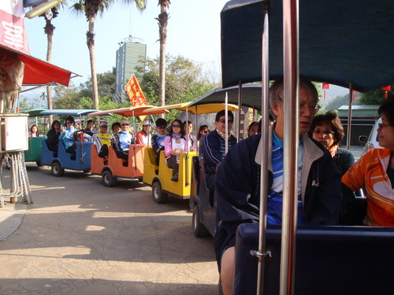 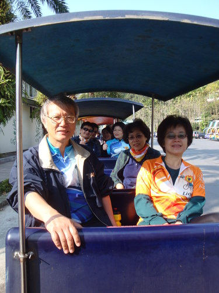
來到惠蓀林場之後，先由解說人員帶領我們欣賞認識林場內的各種植物，大家聽得津津有味，還因此認識很多之前沒有聽過的植物名稱
(編按：惠蓀林場的面積廣達七千多頃，海拔從450公尺至2,418公尺，林場內天然林、次生林與人工林遍佈交織，涵蓋溫、暖溫、亞熱帶三帶林相，植物種類繁多，四季各具獨特風情，在2到3月間可看到咖啡花、埔里杜鵑、笑靨花等植物)
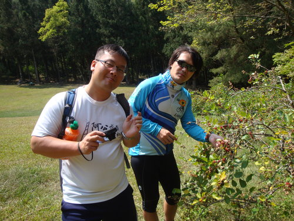
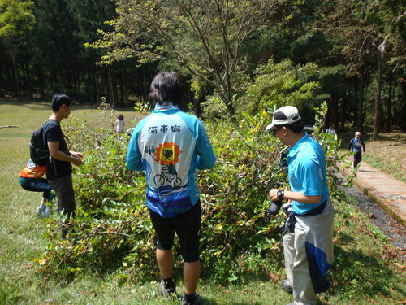
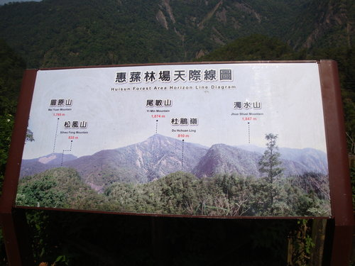
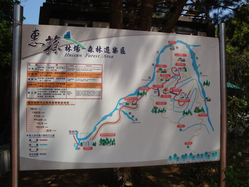
經過了一番森林浴的洗禮後，又來到了中餐時間啦，大家吃完了午餐的便當之後，貼心的徐雲龍大哥又立馬拿出工具開始煮咖啡給大家喝
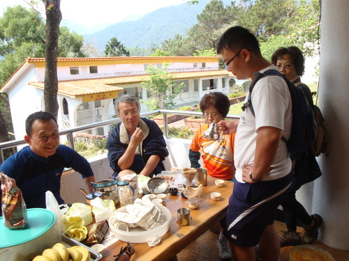
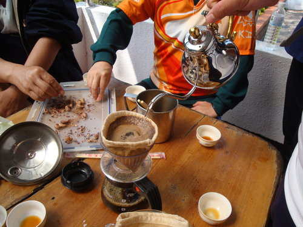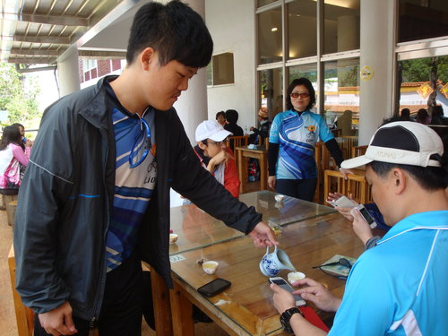
峻明學長的公子(貼心的小幫手及未來的新好男人)
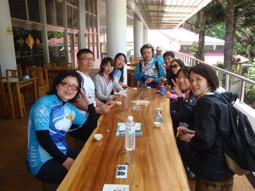
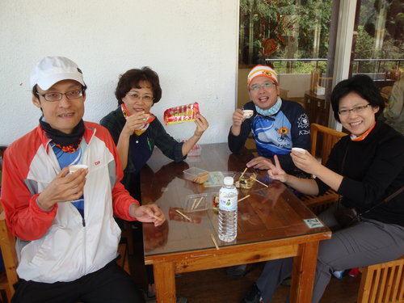
大家來到這個如此舒適宜人的地方，忍不住一整個都慵懶了起來，每個人都自動轉換為省電模式，於是，午睡的午睡，打牌的打牌，摸魚的摸魚(疑?)
最後，打牌的一群人，輸家還特別從草地上滾下來，完成了歷史性的經典畫面，我們在惠蓀林場的悠閒行程也在這個經典畫面中畫下完美的句點
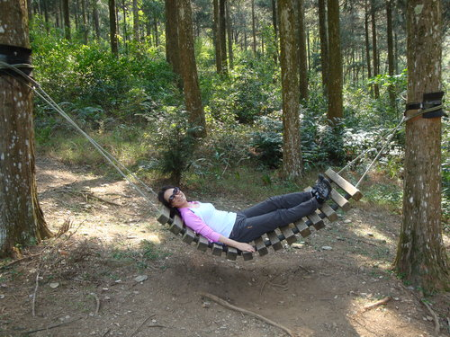
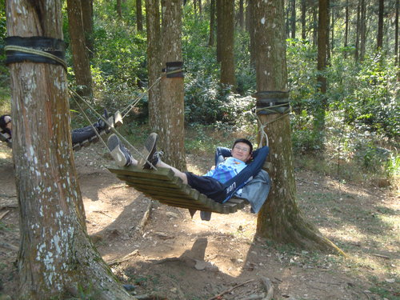
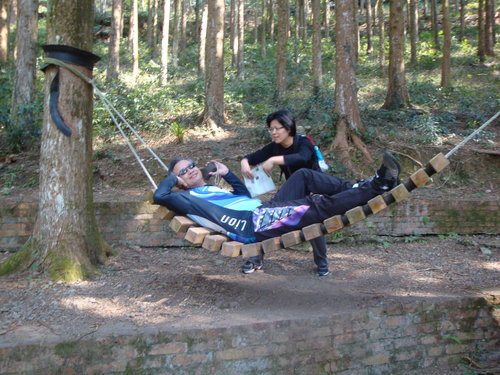
有沒有很想給他躺上去...........
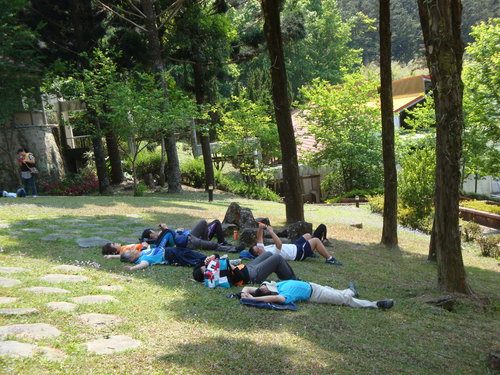
之後再躺下去.........
橋牌對決開戰.....勝負難分.....旁觀者比參賽者還緊張......＃＠＄％︿＆＊＄！
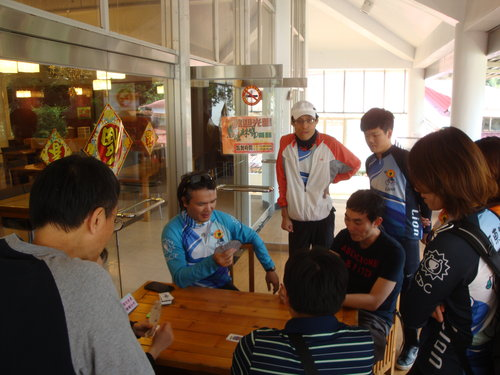
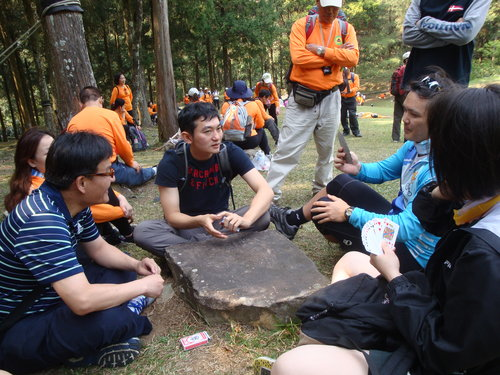
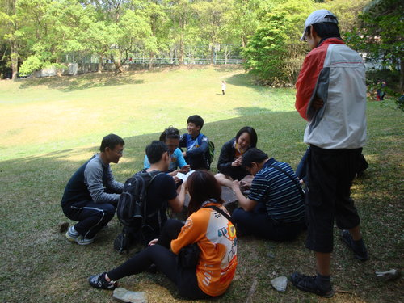
輸家.....就在這片大草原上執行「滾地罰」
當晚一行人在嘉義吃完晚餐之後，我們就懷著一顆滿足的心以及拖著疲累的身軀搭車返回溫暖的高雄了，回到高雄後，在大家同心協力的努力下，很快的完成組車的工作，終於結束了這次令人難忘的日月潭三天單車之旅。大家相約明年金門再相逢啦!
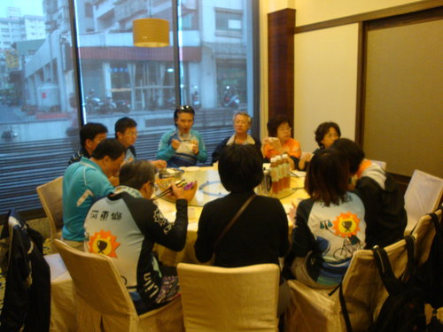